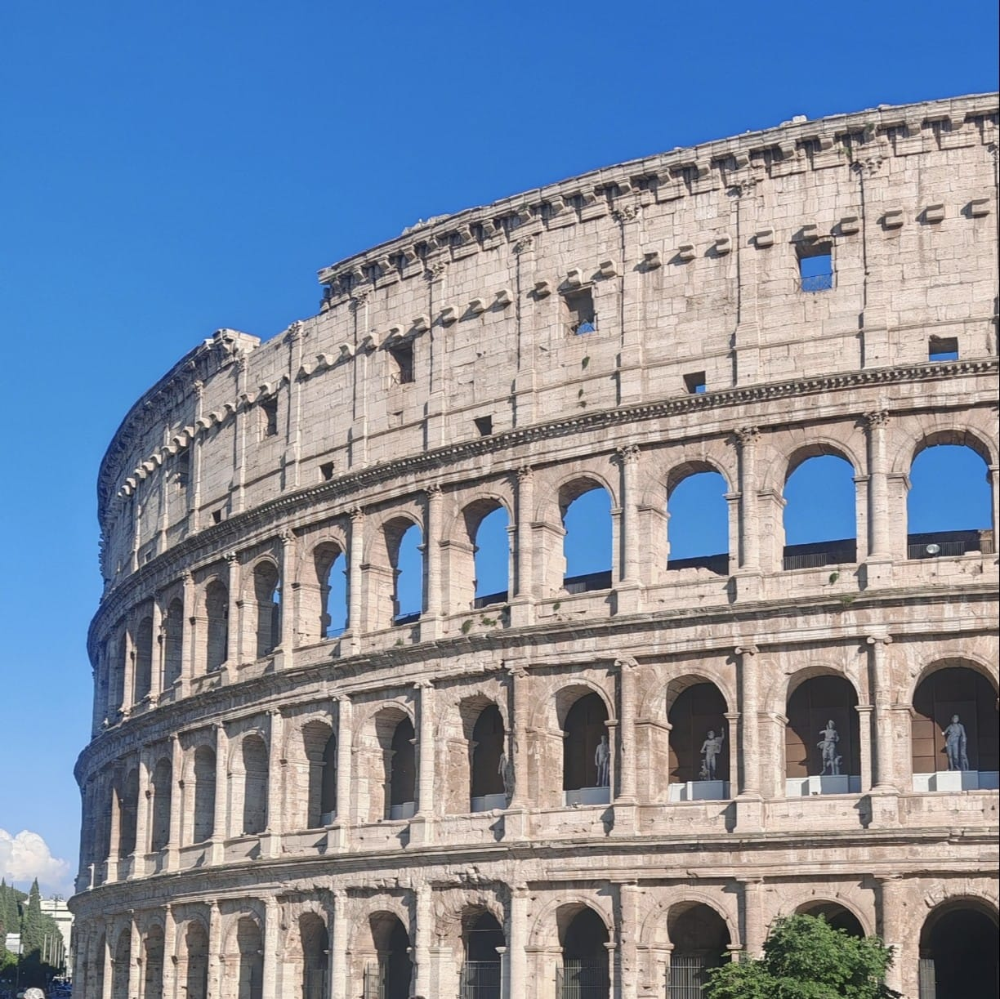
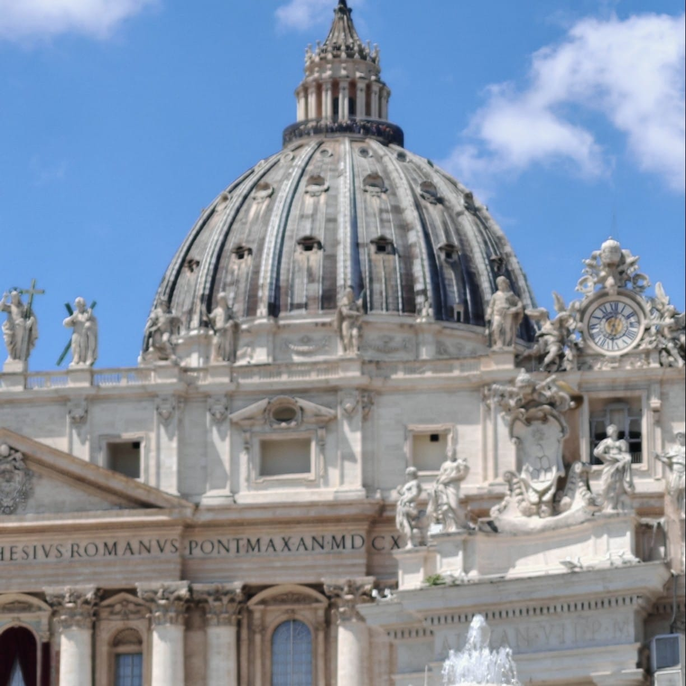
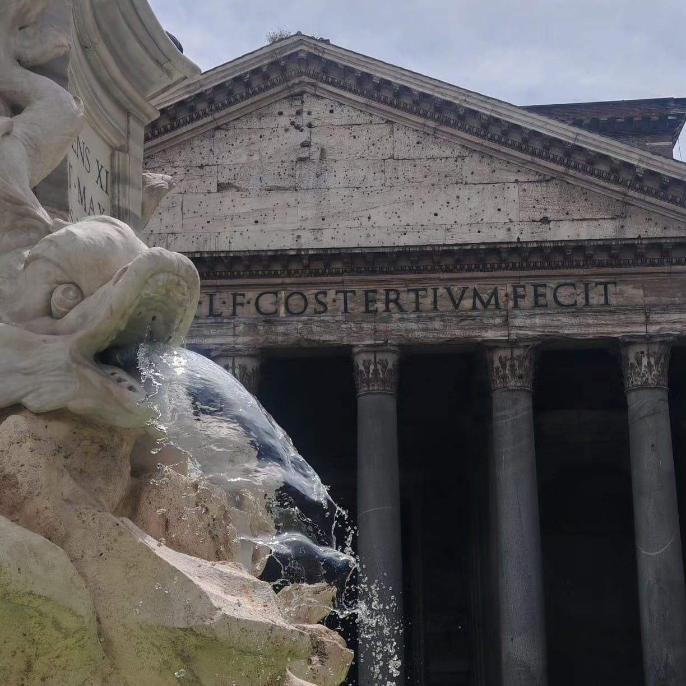
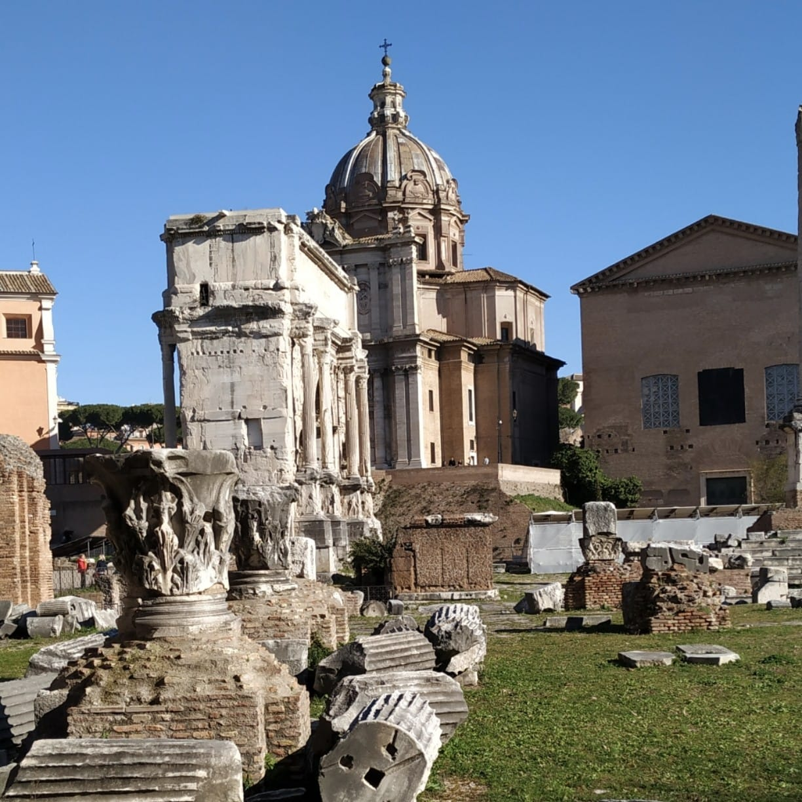
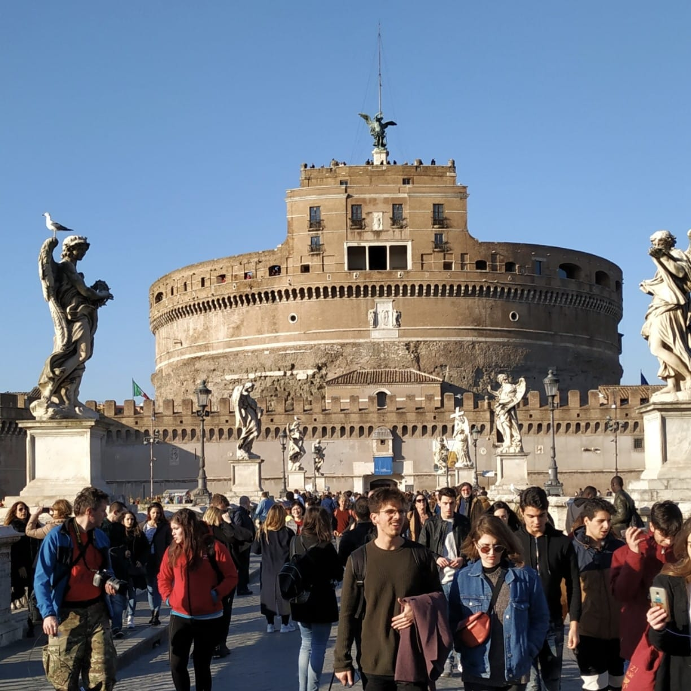
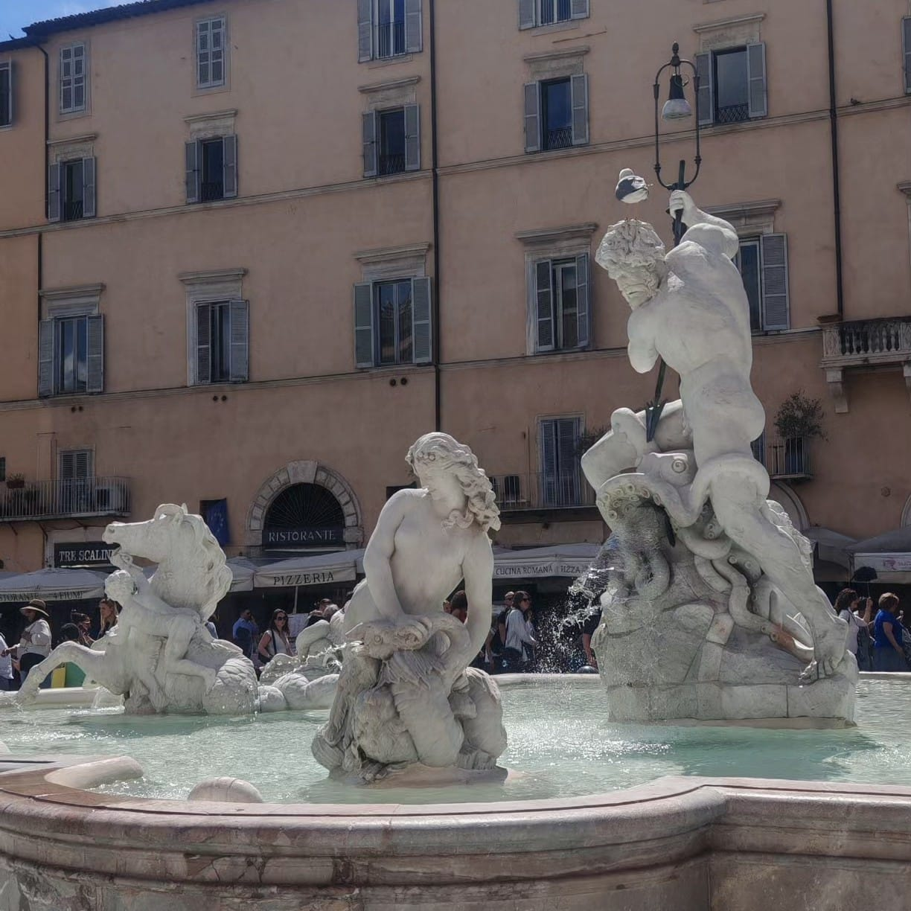
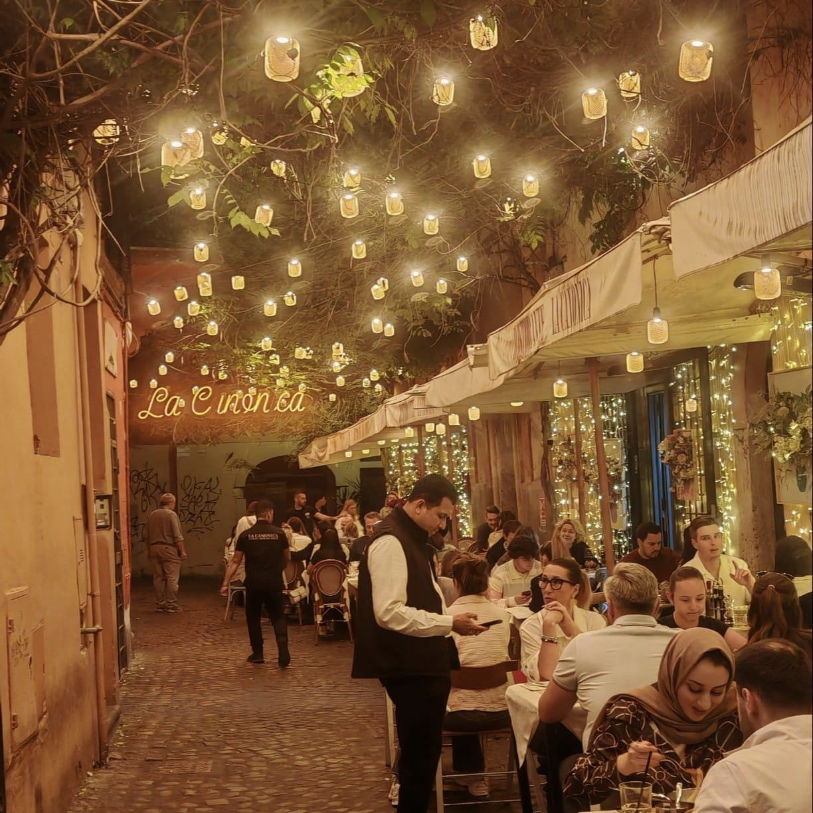
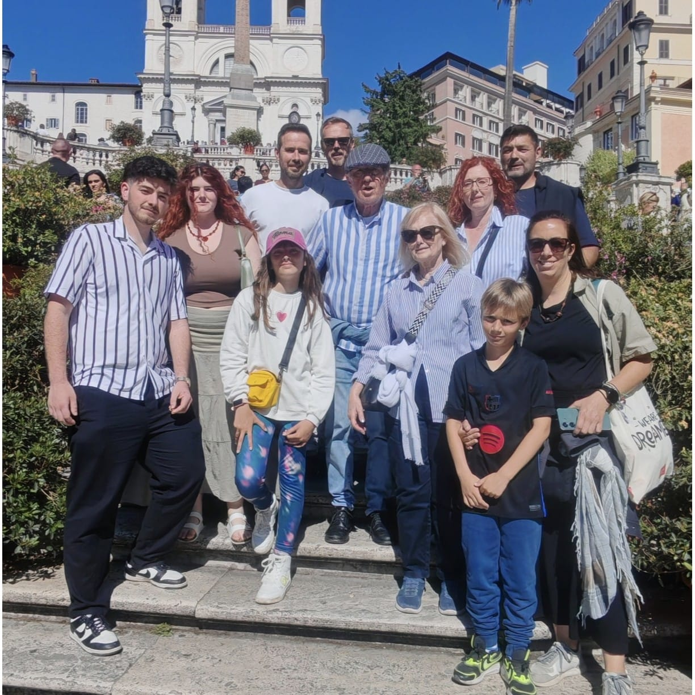
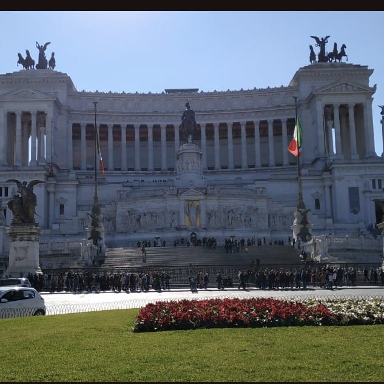

1. 🏛️ Introducción
Roma es una de las ciudades más fascinantes del mundo. Su mezcla de historia, arquitectura, arte y gastronomía la convierten en uno de los destinos más visitados de Europa.
Roma es el corazón geográfico de la religión católica, ciudad santa del catolicismo y destino de peregrinación (vías romeas), y también la única ciudad del mundo que tiene en su interior una entidad estatal autónoma: el enclave de la Ciudad del Vaticano, que se encuentra bajo el poder temporal del papa.
Recorrer Roma es como caminar por un museo al aire libre. En cada calle encontrarás iglesias, ruinas romanas, plazas históricas y algunos de los monumentos más importantes del mundo.
3. 🏨 Dónde alojarse en Roma
🏛️ Centro Histórico ⭐⭐⭐⭐⭐
🍝 Trastevere ⭐⭐⭐⭐
🚉 Termini ⭐⭐⭐
🎨 Monti ⭐⭐⭐⭐
⛪ Vaticano / Prati ⭐⭐⭐⭐
🏟️ Testaccio ⭐⭐⭐
🏛️ Villa Borghese / Parioli ⭐⭐⭐⭐⭐
🚌 San Giovanni ⭐⭐⭐
Mi recomendación personal es alojarse en el Centro Histórico si es tu primera vez en Roma. Todo está cerca y puedes ir caminando a los principales monumentos. Si buscas ambiente auténtico y buena comida, elige Trastevere. Para presupuestos ajustados, Termini es la mejor opción por sus conexiones de transporte y precios más bajos.
🚇 Metro en Roma: La línea A (naranja) conecta Vaticano, Plaza de España, Termini y San Giovanni. La línea B (azul) conecta Coliseo, Termini y Testaccio. Ambas líneas se cruzan en la estación Termini.
🏠 Alternativas: Si viajas en grupo o quieres más espacio, los apartamentos turísticos (Airbnb) suelen ser más económicos que los hoteles, especialmente en zonas como Trastevere o Monti.
🚫 Zonas a evitar: Evita alojarte cerca de la Estación Termini (la zona inmediata puede ser insegura por la noche) y el barrio de Tor Bella Monaca (alejado y peligroso).
4. 🏛️ Qué ver en Roma

1. Coliseo Romano
La atracción número uno de Roma es el Coliseo Romano, un enorme anfiteatro que en la época romana tenía capacidad para 65.000 espectadores. En la arena del Coliseo, los gladiadores luchaban entre sí y contra animales salvajes. En las inmensas ruinas del Coliseo, podrás visitar las gradas, la arena en sí y las zonas subterráneas de este mayor anfiteatro de la época romana.

2. Vaticano
La Basílica de San Pedro del Vaticano es el centro espiritual de la Iglesia Católica y la residencia del Papa. Situada en el Estado independiente de la Ciudad del Vaticano y en la plaza del mismo nombre, la enorme basílica se construyó sobre lo que se presume, era la tumba de Pedro. En la Basílica de San Pedro puedes ver obras maestras como el baldaquino de Bernini y "La Piedad" de Michelangelo, y además visitar las criptas con 148 mausoleos de antiguos Papas. Organiza bien tu visita a San Pedro y así podrás evitar las largas filas..

3. Panteón
Uno de los edificios mejor conservados de la época romana es el Panteón. Aún no está clara la función que cumplía el edificio en aquella época, pero en 608 el emperador Adriano regaló el Panteón al Papa. Aparte de algunas lápidas insólitas (entre ellas las del pintor Rafael y varios reyes italianos), la iglesia actual tiene una llamativa cúpula grande y abierta (oculus). Durante tu escapada a Roma Italia, puedes visitar el Panteón, un atractivo que no debería faltar en su lista de "Qué hacer en el centro de Roma".

4. Foro Romano
El Forum Romanum era el centro del antiguo Imperio Romano. Durante tu visita al Foro Romano podrás pasear por el parque arqueológico donde apreciarás las excavaciones de templos antiguos, arcos del triunfo, mercados y otros edificios importantes que los emperadores ordenaron construir aquí. Junto al foro está el Palatino, o la colina del Palatino, donde se encuentran las excavaciones de las residencias imperiales.

5. Castillo de Sant Angelo
Originalmente, el Castillo de Sant'Angelo, edificado en el siglo II, era el mausoleo del emperador Adriano. Después de que el Arcángel Miguel apareciera aquí en 590 y acabara con la epidemia de la peste, el Papa Pío II mandó colocar una gran estatua de bronce del Arcángel Miguel en lo alto del castillo. El Castillo de Sant'Angelo formaba parte de la línea defensiva de Roma y era lugar de refugio de los Papas durante los ataques a la ciudad, ya que el Vaticano estaba conectado con el Castillo de Sant'Angelo por un túnel. Es útil reservar una entrada para su visita.

6. ⛲ Fontana di Trevi
La "Fontana di Trevi" es la fuente más famosa de Roma, y quizás del mundo. Esta fuente barroca, situada en la plaza de Trevi, fue construida en el siglo XVIII y en ella se representa al dios del mar, Neptuno, en su carroza entrando al mar. Una visita a Roma no está completa si no lanzas la moneda en la Fontana di Trevi, ya que quien lance la moneda "volverá algún día a Roma".
La Fontana di Trevi se encuentra emplazada en la fachada trasera del Palacio Poli, estructurada como un arco triunfal con un profundo nicho, con un orden gigante de pilastras corintias que enlazan las dos plantas.

7. 🏛 Piazza Navona
La Piazza Navona es una de las plazas más destacadas de Roma Italia. La plaza debe su forma enormemente alargada a su función original como estadio de atletismo en la época romana. Entre los lugares de interés de la plaza se encuentran varias fuentes, entre ellas "La Fontana dei Quattro Fiumi" de Bernini, un llamativo obelisco y se pueden visitar igualmente las excavaciones del antiguo estadio de Domiciano.
La plaza tiene una forma alargada, de acuerdo con la pista del estadio de Domiciano que ocupaba este espacio, manteniéndose sus mismas dimensiones e incluso la curva de la zona norte, mientras que los edificios que la circundan se levantan en lo que eran las gradas del antiguo estadio.

8. 🍝 Trastevere
Al otro lado del río Tíber se encuentra el antiguo barrio obrero de Roma. Trastevere es un típico barrio italiano con su laberinto de callejuelas estrechas, antiguas casas medievales y que, sobre todo por las noches, se convierte en una animada zona con numerosos restaurantes y bares.
Entre los principales monumentos de este barrio se encuentran: La basílica de Santa María en Trastevere, la Porta de San Pancrazio y la Porta Settimiana (ambas en la muralla Aureliana), el colegio de la Propaganda Fide, las Cárceles de Regina Coeli, la Villa Farnesina, el palacio Salviati, el palacio Corsini, el Seminario Ruteno, el Museo Torlonia y la iglesia de San Pietro in Montorio (en el sitio donde según la tradición fue crucificado el apóstol san Pedro).

9. ⛪ Plaza de España
A los pies de la iglesia francesa "Trinita dei Monti" se encuentran los 135 escalones de la Escalinata Española. Desciende por la Escalinata Española hacia la Piazza di Spagna, donde encontrarás una impresionante fuente de Pietro Bernini. La Escalinata Española, que data del siglo XVIII, se ha convertido en un punto de interés turístico ya que en lo alto de la Escalinata se tiene una vista impresionante de Roma Italia.
La plaza se encuentra en el cruce de las calles Via del Babuino desde el norte, por el oeste la Via del Condotti y por el sur la Via dei due Macelli y la Via della Propaganda, justo en el centro podemos encontrar la famosa Fuente de la Barcaza, esculpida por Pietro Bernini y su hijo, el célebre Gian Lorenzo Bernini.

10. 🏛 Monumento a Vittorio Emanuele II
En la plaza Venecia se encuentra uno de los monumentos más destacados de Roma, el monumento al primer rey de Italia, Vittorio Emanuele II. El monumento también es conocido por el nombre "Altare della Patria", el altar de la patria y conmemora la unidad de Italia. Los Romanos lo conocen también con los sobrenombres de "máquina de escribir" y "tarta de bodas". El colosal edificio blanco incluye un museo y la Tumba del Soldado Desconocido, siempre custodiada por dos soldados.
El monumento está construido con mármol blanco extraído de las canteras de Botticino (cerca de la ciudad de Brescia), mostrado por ejemplo en las majestuosas escaleras o las columnas corintias.
Debido al gran número de visitantes, se recomienda encarecidamente reservar entradas para el Coliseo. Tienes 3 opciones: reservar entradas combinadas (que incluyan el Foro Romano), reservar una visita guiada y la opción más popular es comparar las diferentes tarjetas turísticas de Roma.
Los museos vaticanos y Capilla Sixtina son las que registran las colas más largas. Reservar las entradas con tiempo es necesario para que puedas visitar el museo el día que lo has planeado.
{kind=link}
{kind=link}
{kind=link}
{kind=link}
{kind=link}
{kind=link}
{kind=link}
{kind=link}
{kind=link}
{kind=link}
{kind=link}
{kind=link}
{kind=link}
{kind=link}
{kind=link}
{kind=link}
{kind=link}
{kind=link}
{kind=link}
{kind=link}